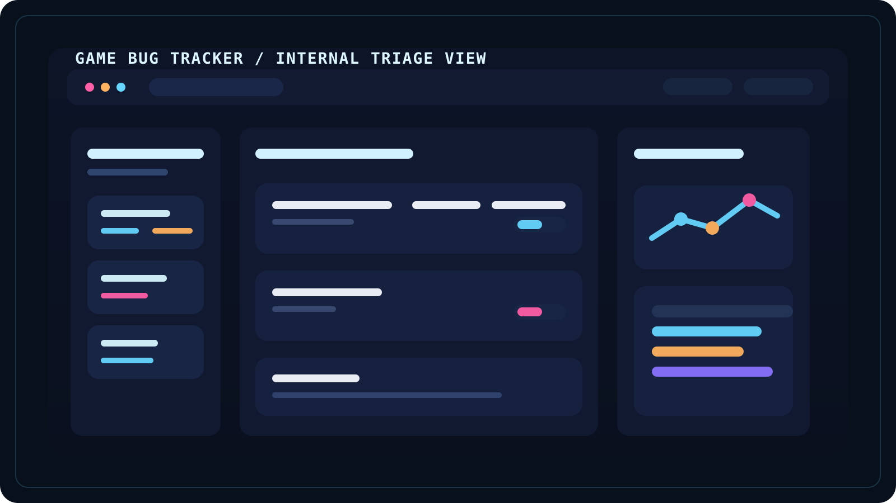

Class / Role
Gameplay-focused technical builder
- ClassGameplay Programmer
- Target roleGameplay / systems-focused C# developer
- SpecializationCombat readability, tooling, architecture
- Current questTurn the Unity RPG prototype into a flagship case study
Character Summary
C# Gameplay Programmer | Unity Systems | Tools | Technical Writing
I build gameplay systems, internal tools, and technical learning material that stay readable under pressure and expand cleanly over time.
Build philosophy: I build systems that are readable, deterministic, and expandable.
Class / Role
Proof Panel
GenericRPG in C# textbook seriesFeatured Mission
 Flagship
Flagship
This is the project that should eventually define the portfolio. The goal is not only to show code, but to prove combat feel, encounter readability, enemy behavior, and how a system responds when the player is under pressure.
RPG systems can become unreadable quickly if combat feedback, pacing, and enemy behavior evolve in isolation.
Prototype the combat loop, progression beats, and encounter readability together so the system feels intentional at speed.
Combat feel, AI pressure, progression clarity, and the decision-making rhythm that makes an RPG loop worth tuning.
Real screenshots, short gameplay clips, a full codex page, and clearer engineering notes on encounter structure.
Mission Log
Node 01
A developing Unity prototype focused on RPG combat, progression, and encounter readability. This is the flagship mission the rest of the portfolio points toward.
Solo gameplay programmer shaping the combat loop, progression structure, and system readability.
RPG systems can become noisy fast if combat feedback, enemy behavior, and pacing are tuned in isolation.
Prototype the combat loop, encounter pressure, and progression structure together so the final build feels responsive under stress.
Unity, C#, encounter scripting, AI behavior planning, and temporary concept art while the visual proof is still being prepared.
Combat feel, enemy pressure, feedback timing, and system structure that can scale into a fuller case study.
Temporary art right now. Real gameplay captures and short clips are the next milestone before the deep codex page is published.
Not public yet. Use the inquiry link to ask about the current build state and upcoming showcase material.
The strongest flagship project needs not just code depth, but media proof that clearly communicates game feel and decision clarity.

Node 02A game-focused Razor Pages tool for organizing bug reports, keeping severity and status readable, and building a more practical internal triage workflow for active projects.
Solo developer shaping the structure, data model, and workflow expectations for a production-facing tool.
Bug intake for game projects becomes noisy when severity, ownership, and project context are not obvious at a glance.
Build a focused Razor Pages tracker that treats bug triage like part of production workflow, not just a generic CRUD list.
C#, ASP.NET Core Razor Pages, .NET 10, Git, and structured model-first planning.
Production workflow, bug-state consistency, internal tool readability, and practical architecture boundaries.
The case-study page is live; UI screenshots will be added once the CRUD views and filtering flows are implemented.
Case study and GitHub repo.
Scoping tools work well means deciding early which game-production behaviors deserve structure and which can stay lightweight.
 Node 03
Node 03
A long-form technical book series teaching C#, software architecture, and game development through one cumulative RPG build that grows from first principles into full platform thinking.
Author and systems educator using one cumulative RPG build to teach both programming and architecture thinking.
Many beginner programming paths teach syntax without showing how architecture and game systems scale together over time.
Write one cumulative 8-volume RPG-centered curriculum that starts with fundamentals and grows into architecture, tooling, and web delivery.
C#, software architecture patterns, testing strategy, RPG system design, ASP.NET Core, and Blazor curriculum planning.
State-driven systems, long-range curriculum design, and architectural decisions that stay coherent across hundreds of chapters.
Live book dossier page, custom cover art, and five curated web-only sample chapters while the Amazon listing is still being finalized.
Book dossier with Amazon-first CTA links and on-site preview chapters.
Long-form teaching gets stronger when examples stay cumulative, coherent, and anchored to one evolving project instead of disconnected lessons.
Core Stats / Skill Tree
Interactive skill map
This filter keeps the site easy to scan for recruiters while still feeling like a game-themed dossier.
Showing all mission nodes.
Character sheet
Core stats
GenericRPG in C# textbook series across 200 chapters.Toolkit / Inventory
Build Philosophy
The best work on this site sits where game feel, architecture, and support tooling reinforce each other. I want a player-facing system to stay legible under pressure, and I want the code behind it to remain stable enough for iteration instead of collapsing under feature growth.
That same philosophy carries into writing and tools work. Whether the output is a gameplay loop, a bug tracker, or a 200-chapter textbook, the goal is the same: make complexity understandable, structured, and genuinely useful.
Achievements / Unlocks
GenericRPG in C#Long-form technical writing project spanning C#, architecture, gameplay logic, and publishing preparation.
This milestone proves writing endurance, systems communication, curriculum structure, and the ability to carry one coherent technical idea across a very large body of work.
The portfolio is now deployed with stable routing, custom domain setup, and a working professional contact path.
This demonstrates practical deployment discipline: GitHub Pages hosting, GoDaddy DNS, and Zoho mail records working together in a real public setup.
The site moved beyond a generic card grid into a game-themed structure that still behaves like a professional resume.
This proves interface judgment as well as frontend implementation: theme framing, recruiter scanning, interactive filters, motion restraint, and static-site delivery.
A real tooling mission already has a live dossier page instead of staying trapped as a placeholder card.
This marks the shift from “portfolio concept” to actual documented project proof, with more media and implementation detail planned next.
Progression Log
C# foundation
The early focus was clarity: understand how code runs, how state changes, and how logic stays readable before visuals get involved.
Console RPG systems
That work eventually became the GenericRPG in C# series and shaped how I think about layered mechanics and teachable system growth.
Tooling discipline
The Game Bug Tracker exists because readable production flow matters just as much as player-facing systems when a project starts growing.
Unity focus
This is where the portfolio is headed visually too: real captures, deeper case studies, and proof that the systems read well in motion.
Current build
The next step is replacing temporary art with real media and deepening the flagship case studies without losing the honesty of the current build.
Contact / Links
Extraction point